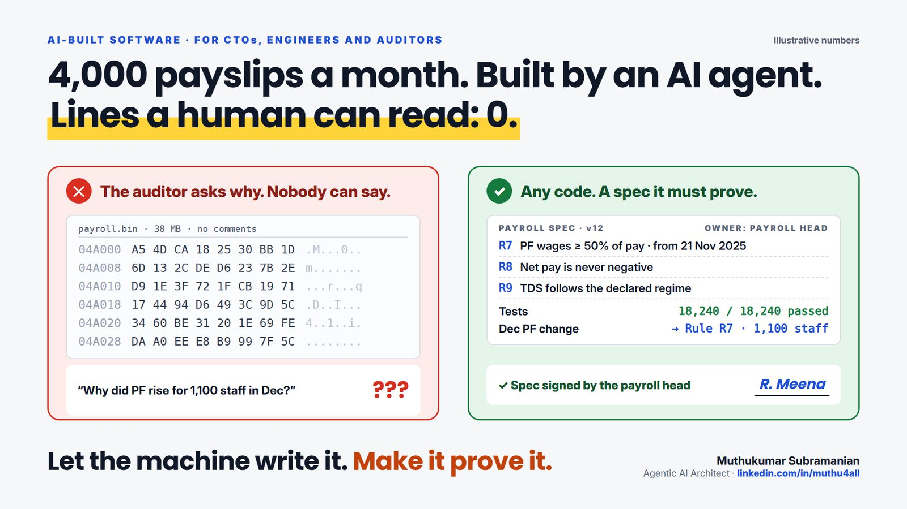

Your AI Agent Rewrote the Payroll in a Language No Human Can Read. Who Signs the Audit?
By Muthukumar Subramanian · Agentic AI Architect

Picture a March audit, a few years from now.
A textile group in Coimbatore. 4,000 employees. The auditor sends one question: "Why did PF deductions go up for 1,100 employees in December?"
The payroll was rebuilt last year by an AI agent. Not in Java, not in Python. In its own optimised form: no folders, no classes, no comments, one compact binary that runs the whole month in seconds. The vendor says it has never miscalculated a payslip.
The finance team opens the "source". It's a wall of hex. The engineer who set it up has moved on. The vendor's support agent offers a confident explanation that nobody can check.
The payroll is probably right. Nobody can prove it. (The company, the numbers and the scene are illustrative.)
So who signs the audit?
The idea I can't stop thinking about
Here's what's been on my mind. Today we make AI write code in our languages. JavaScript, Java, Python. Our folder structures, our layers, our design patterns. Then we review it line by line, as if the machine were a junior developer.
But think about why those things exist. I've been in IT for 25 years, at Infosys and then as a consultant and fractional executive, across everything from legacy systems to agentic AI. Almost every language and framework I learned was built for one reader: a tired human who has to hold the system in their head. MVC, microservices, clean code, naming conventions. They're crutches for our brains, not for the CPU.
So why not let AI pick its own language? Generate something optimised for the machine, skip our crutches, and eventually build whole systems from what the business needs, with no human in between.
This isn't science fiction. It's already started at the bottom of the stack.
→ In 2023, DeepMind's AlphaDev worked directly in assembly and found faster sorting routines. They went into LLVM's libc++, the first change to those standard sorting routines in over a decade. DeepMind then translated them back into C++ so humans could use them.
→ In 2024, Meta released LLM Compiler, models trained on about 546 billion tokens of compiler IR and assembly, the layer below the code we read.
→ Back in 2017, Andrej Karpathy called neural network weights "Software 2.0": code that nobody writes or reads line by line.
So on the direction, I think the idea is right. The machine doesn't need our languages.
The twist: code was never only for the machine
Here's my contrarian claim: the faster AI writes code, the more the human-readable layer matters, not less.
Ask who actually reads code over its life:
→ The machine. The only reader that doesn't need it to be readable.
→ The next engineer, at 2 AM, when something breaks.
→ The auditor, asking why a number changed.
→ The regulator, asking whether a rule was followed.
→ A court, asking who decided.
Code is a record. Take the readable record away and you get a system that works until someone asks "why?"
We've done this before. It's called COBOL. I wrote about it in "Your Last COBOL Expert Retires Next Year. Who Remembers Why the Code Works?": systems that run the money, written in a language that fewer and fewer people can read. AI-only code would be COBOL at a scale and speed we've never seen, and with no expert left to retire because there never was one.
There's a security problem too. A binary nobody can review is a perfect place to hide a backdoor, whether a supplier planted it or a poisoned model learned it. We've learned the hard way that you can't trust what you can't inspect.
👉 [IMAGE: C-unreadable-code-2-in-article-two-paths.png]
Caption: Two ways an AI can build your payroll. Both may run perfectly. Only one can answer the auditor.
"But the AI won't make mistakes"
Maybe one day it won't make coding mistakes. It'll still build exactly what it was told.
Take "deduct PF correctly". Correct by which rule, from which date, for whom? India's four labour codes took effect on 21 November 2025, with a new definition of wages that pushes many salary structures towards a larger PF base. Should the company restructure salaries? From when? For contract staff too? Those are business decisions, not coding ones.
Even a perfect builder needs a perfect spec. Businesses almost never have one. The mistakes don't disappear. They move from the code to the intent.
The resolution: let the machine write it, make it prove it
So I'd split the job. Let the AI write in any form it likes, as fast as it likes. But it has to hand over an evidence pack that humans can read:
→ 1. The spec. Plain-language rules, numbered, each with an owner and an effective date. "Rule 7: PF wages are at least 50% of total pay, from 21 Nov 2025. Owner: payroll head."
→ 2. Tests. Thousands of real and generated cases, plus properties that must always hold: net pay is never negative, PF never goes above what the rule allows.
→ 3. Proofs, where the stakes justify them. Formal verification isn't new. In 2009, the seL4 team proved that a whole operating-system kernel followed its specification, checked by machine. It's expensive, but for payroll, payments and tax, parts of it are worth the price.
→ 4. A trace. For every number on every payslip: which rule produced it.
→ 5. A human signature on the spec, not on the code.
The spec becomes the new source code. Engineers move from reading code to checking specs and evidence.
👉 [IMAGE: C-unreadable-code-3-in-article-evidence-pack.png]
Caption: The evidence pack. Five things any AI-built system that touches money should hand over. Screenshot it for your next vendor review.
👉 [GIF: C-unreadable-code-4-in-article-prove-it.gif]
Caption: Same request, two outcomes. A wall of hex and a question mark, or a spec, tests, a trace and a signature. Illustrative.
The new jobs in the middle
Someone has to turn "pay people correctly" into fifty precise rules. That's the forward deployed engineer (FDE): an engineer who works inside the customer's team, sits with HR and finance, and writes down what the business actually means. Someone else checks that the evidence holds: a spec reviewer, or verification engineer. The titles are still settling. The skills aren't new: requirements, testing and logic, with far higher stakes.
What I might be wrong about
→ AI explanations may become good enough. If an agent can explain any line of its binary on demand, maybe readable code matters less. But an explanation is a story, not proof. A model can explain a wrong answer very convincingly.
→ Regulators may accept test evidence alone. They already accept it for some systems. If so, proofs stay rare.
→ Proofs are expensive. Outside kernels, aviation and chips, few teams do formal verification today. AI may make it cheap, or it may not.
→ Specs can be wrong too. A signed spec with a bad rule just moves the error to someone with a pen. That's still better: at least you know who decided.
The opportunity
→ For CTOs: before buying any AI-built system that touches money, ask for the evidence pack, not a demo.
→ For auditors and CA firms: "spec and trace audits" of AI-built systems are a new practice. Learn to read a spec and a test report.
→ For engineers and students: learn to specify and test, and learn one domain deeply. Code-reading may shrink. Spec-reading won't.
→ For founders: tools that turn business rules into specs, specs into tests, and every output back into a trace.
Let the machine write it. Make it prove it.
Your turn 👇
Would you run your payroll on code no human can read, if it came with tests and a proof? Yes or no.
Tag the auditor who'd ask the first question.